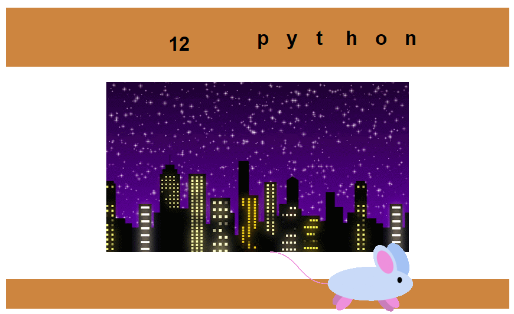

1.1.9 Project: For our project, we created an underwater scene with a rock, sand, octopus, jellyfish, crab, starfish, kelp, a treasure chest, and bubbles. When you run the code, bubbles float to the top and then an orange fish appears. It swims across the screen, hits a shark, and turns into a big fish.
1.2.5 Project: For our game, we made a mouse and cheese hangman game. It displays a mouse, cheese, number of guesses, and correctly guessed letters on a city background.The user has up to 15 guesses for the entire word. When they guess a letter correctly, the mouse moves towards the cheese and the user still has 15 guesses left. If the letter is incorrect, the mouse doesn’t move and the number of guesses decreases. If a letter is guessed twice, the program will say “letter is already guessed!”
.png)
.png)
.png)
.png)
1.3.1 Project: For 1.3.1, we created a fish and shark game that takes place underwater, where the goal is to avoid as many sharks as possible. To start the game, the player has to press the space key. When space is pressed, a countdown timer appears to show how many seconds until the game starts, and the fish gets into position on the left. There is also a score counter in the center. Pressing “w” will make the fish travel upwards, while pressing “s” will make it go down. Players will use these keys to avoid the sharks, which swim to the left. When the fish collides with a shark, the score counter stops and “game over” appears on screen.